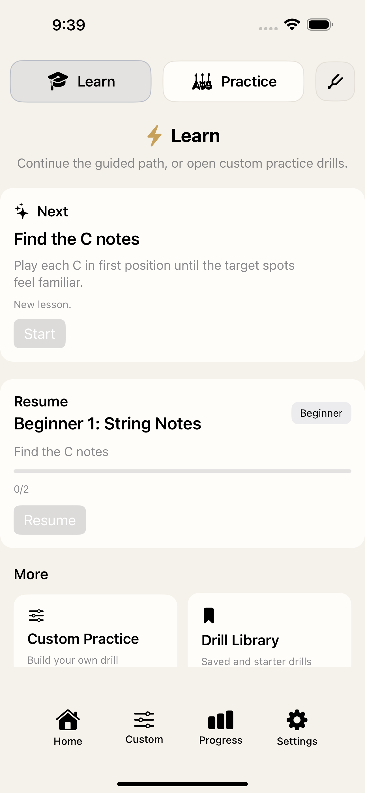
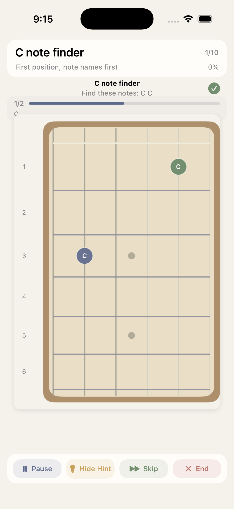
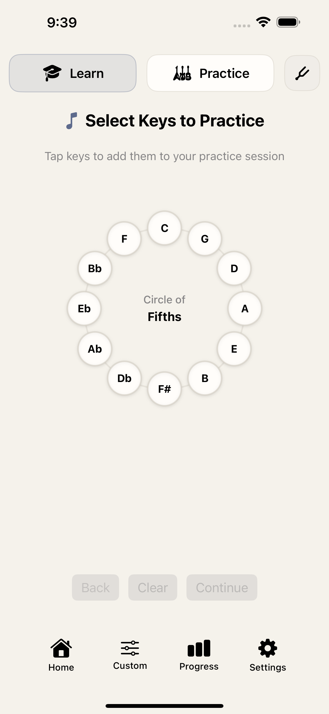
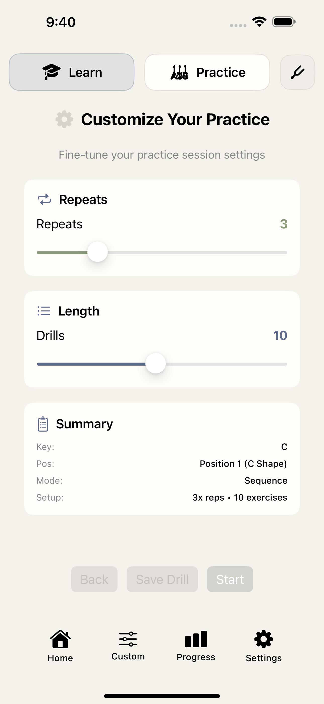
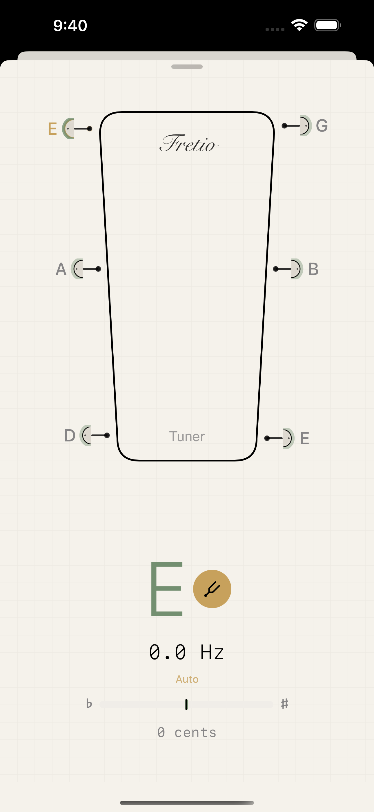
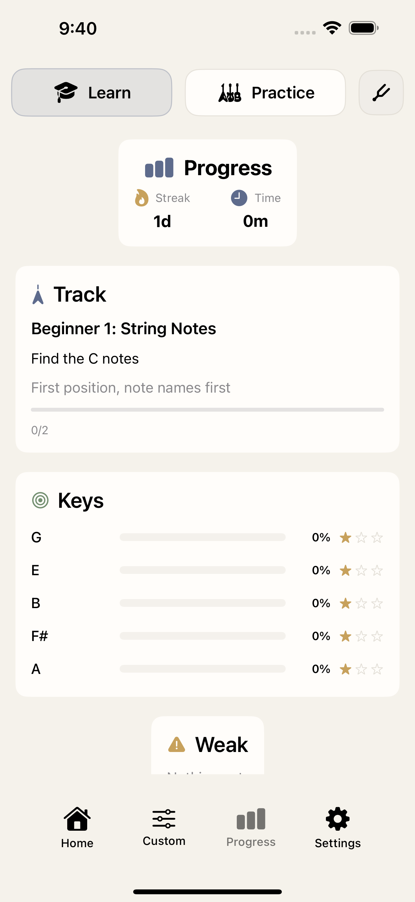

Guitar Learning & Practice for iPhone
Learn Guitar In A Space That Feels Like The App
Fretio helps guitar players build fretboard knowledge, ear training, and practice consistency with interactive visual feedback, real-time note detection, Circle of Fifths learning, and a built-in tuner.


Why Fretio
Focused tools for better guitar practice
Fretio combines a warm, distraction-light interface with guided learning, visual fretboard feedback, and practice tools that are easy to return to every day.
Guided home dashboard
Jump straight into learning or practice from a cleaner home flow. Fretio highlights your next lesson, lets you resume where you left off, and keeps custom drills and progress one tap away.
- Clear Learn and Practice entry points
- Resume cards for your current track
- Quick access to custom drills and saved starters
- Bottom navigation for home, custom, progress, and settings
Live note detection with visual fretboard feedback
Practice note finding with real-time on-screen feedback. Fretio listens through your iPhone microphone, shows the target notes on the fretboard, and supports hint, skip, and session controls while you play.
- Real-time note detection for guitar practice
- Interactive fretboard targets and progress indicators
- Hint and skip controls for smoother practice sessions
- Designed for focused ear training and fretboard recall
Circle of Fifths learning
Work through structured key-based learning flows inspired by the Circle of Fifths. The key-selection flow connects music theory practice directly to hands-on drills.
- Circle of Fifths key selection
- Guided learning modules built around note relationships
- Useful for beginners and theory-focused players alike
- Pairs naturally with note-finding drills and progress tracking

Custom practice setup
Build your own drills by tuning the session length, repeats, and drill summary before you start. This makes it easier to create focused practice routines around a single key, position, or sequence.
- Adjustable repeats and drill length
- Session summaries before you begin
- Flexible setup for different practice goals
- Supports targeted, repeatable guitar drills

Built-in tuner
Open the tuner directly from the top navigation when you need to tune up fast. The refreshed tuner view gives you a cleaner readout for note, frequency, and cents while staying in the app’s updated visual style.
- Chromatic tuning support
- Readable note, frequency, and cents display
- Fast access from the main app flow
- Works alongside the same microphone permission used for note detection

Progress tracking
Track streaks, time spent, current learning tracks, and weaker areas from the dedicated progress view. Practice stats stay visible so it’s easier to stay consistent and spot where to focus next.
- Streak and practice time at a glance
- Track progress for guided learning paths
- Key-based progress summaries
- Weak-area callouts to guide the next session

Visual Tour
App screenshots
A closer look at Fretio’s learning flow, live feedback, tuner, custom practice setup, and progress tracking.
Help & Details
Support
Frequently Asked Questions
How does live note detection work?
Fretio uses your iPhone microphone to detect the notes you play and compare them with the current drill. Audio is processed on device in real time and is not recorded or uploaded.
Do I need an account to use Fretio?
No. Fretio does not require an account to access its core learning, practice, tuner, or progress features.
Can I use acoustic and electric guitar with the app?
Yes. You can practice with acoustic guitar or with an electric guitar picked up by your iPhone microphone in a quiet enough environment.
Can I still use the app without microphone access?
Yes. Visual learning and practice flows remain available, but live note detection and tuner features need microphone permission.
Contact support
If you need help or want to report an issue, email us at:
Email: fretio0719@gmail.com
Response time: Usually within 24-48 hours
Including the details below helps us troubleshoot faster:
- Your iPhone model and iOS version
- Your Fretio app version
- A clear description of the issue
- Steps to reproduce it
Technical requirements
- iOS 18.0 or later
- iPhone only
- Microphone access for live note detection and tuner features
- No account required
- Core audio processing and practice data stay on device